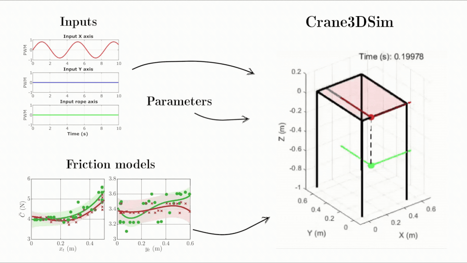
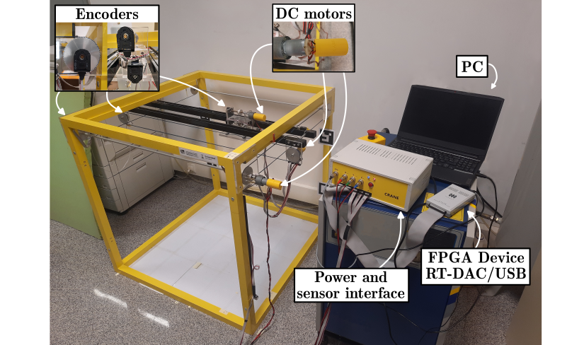
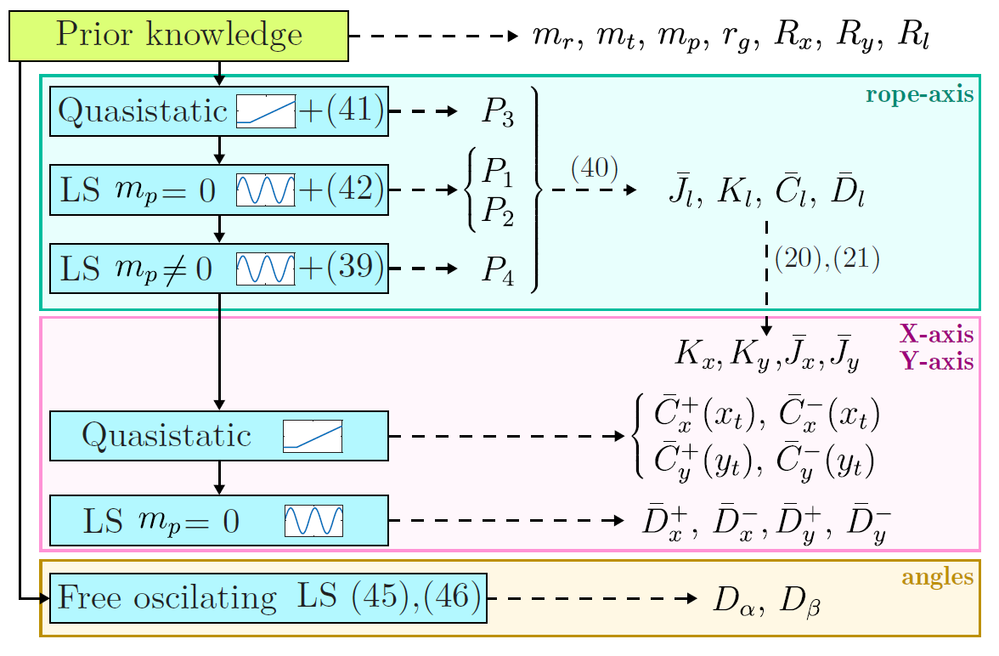
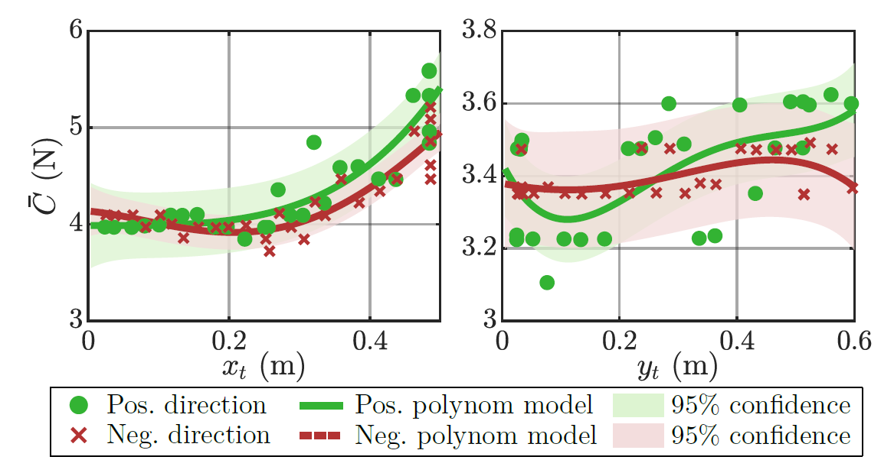
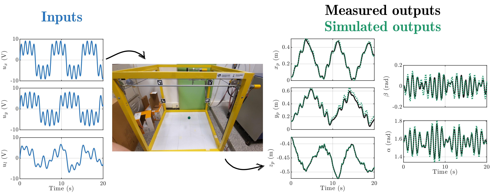

A hybrid dynamic model and parameter estimation method for accurately simulating overhead cranes with friction


Abstract
This paper presents a new approach to accurately simulating 3D overhead cranes with friction. Although nonlinear friction dynamics has a significant impact on these systems, accurately modeling this phenomenon in simulations is a significant challenge. Traditional methods often rely on imprecise approximations of friction or require excessive computational times for reliable results. To address this, we present a hybrid dynamical model that features a trade-off between high-fidelity friction modeling and computational efficiency. Furthermore, we present a step-by-step algorithm for the comprehensive estimation of all unknown system parameters, including friction. This methodology is based on Bayesian Linear Regression and Least Squares (LS) estimations. Finally, experimental validation with a laboratory crane confirms the effectiveness of the proposed modeling and estimation approach.
Hybrid simulation model
To address the numerical issues caused by the dry friction simulation and to easily incorporate the dependence of friction on the direction of motion and position we propose the use of a hybrid simulation model with three distinct motion states for each axis of movement (negative direction motion, no-motion, and positive direction-motion).
Parameter estimation
Our estimation strategy proposes a multi-step method that separates the estimation of dry friction functions using Bayesian Linear Regression from the LS estimation of the parameters.


Experimental results
To validate the parametric estimation process and the simulator model, we conducted various experiments by exciting motion along the three axes with signals of different frequencies. The results show high fidelity, with the outputs of the simulator closely matching the experimental data, thereby confirming the accuracy of the model in replicating the behavior of the system under these conditions.

This work is part of the project NoRMMAS PID2024-159279OB-I00, funded by

It was founded also in part by the MICIU through the grant FPU24/01878, in part by the Government of Aragón - EU, via grant T45_23R and in part by Fundación Ibercaja and the University of Zaragoza, via grant JIUZ2023-IA-07.